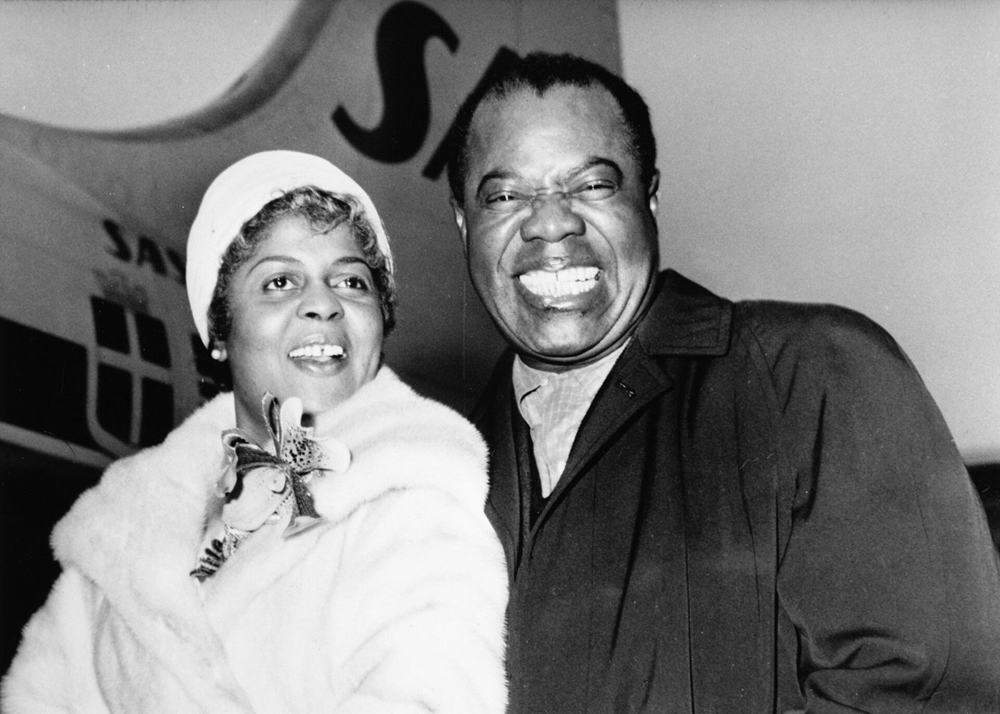
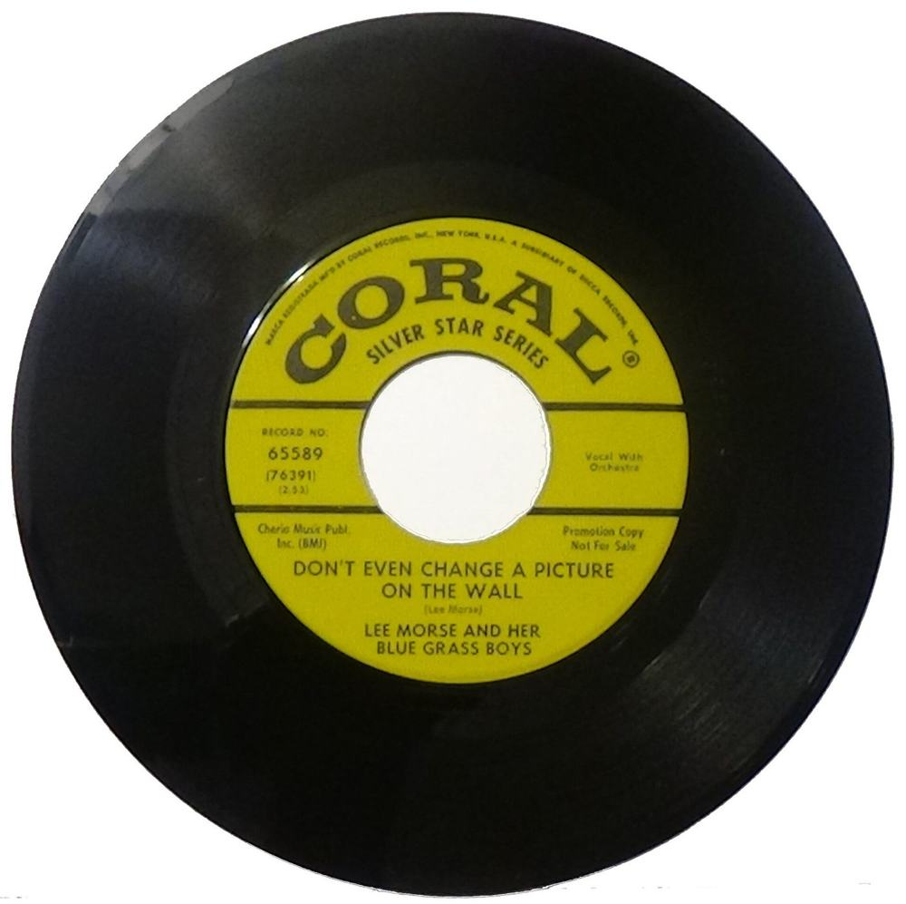

故事
這首全世界都會唱的歌，剛發行時在美國幾乎沒人買。1967 年，Louis Armstrong 錄下 What a Wonderful World。據說唱片公司的老闆不喜歡這首慢歌，幾乎沒有宣傳。
它在美國的第一批，據說賣不到一千張。可是在英國，它一路衝上排行榜第一名。那時 Armstrong 已經六十多歲，成了英國當時最年長的冠軍歌手。

二十年後，一部電影用了這首歌，美國人才重新聽見它。1988 年，它終於打進了美國排行榜。下次聽到這首歌，想想它在美國等了二十年。
故事後面
What a Wonderful World 一九六七年發行時，據說唱片公司老闆不喜歡這首慢歌，幾乎沒有宣傳，在美國賣得很差。
在英國它卻衝上第一名，Armstrong 也成了當時英國排行榜最年長的冠軍歌手。
一九八七年電影《早安越南》用了這首歌，美國人才重新聽見，隔年打進美國排行榜。

這樣聽
聽他沙啞的嗓子怎麼把一首簡單的歌唱得溫暖。
逐句英文
This song the whole world knows barely sold in America when it came out.
In 1967 Louis Armstrong recorded What a Wonderful World.
Reportedly the label boss disliked the slow song and barely promoted it.
Its first US pressing reportedly sold fewer than a thousand copies.
But in Britain it climbed all the way to No. 1.
Armstrong was in his sixties, then the oldest artist to top the UK chart.
Twenty years later a film used the song, and Americans finally heard it.
In 1988 it finally made the US charts.
Next time you hear it, remember it waited twenty years in America.
查證筆記與出處
「賣不到一千張」「老闆不喜歡」為常見記載（ABC 唱片的 Larry Newton），寫據說。電影是一九八七年《早安越南》，稿裡沒點名。「最年長冠軍」是當時紀錄，條目寫法。
https://en.wikipedia.org/wiki/What_a_Wonderful_World
https://en.wikipedia.org/wiki/Louis_Armstrong
一分鐘影片版在 Instagram @jazz101tw。